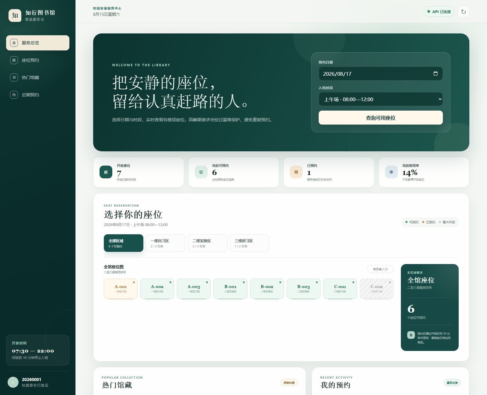

项目校园智慧图书馆 · 座位预约
Campus Library
校园座位预约系统，探索并发竞争、事务与数据库一致性。
概览
这个项目是什么
一个面向考试周突发流量的座位预约系统。
第一版只做一件事：把“多人同时抢同一个座位不超卖、客户端重试不重复创建”做成可运行、可测试的最小闭环。学生端预约座位，馆员端管理座位和预约。


起因
为什么要做
最开始，这只是一个很普通的需求：学生查询座位、选择时间、提交预约，之后可以取消或者签到。
但考试周集中抢座时，如果两个人同时预约同一个座位，应用程序可能同时检查到“座位可用”，然后分别创建预约。“先检查，再插入”解决不了这个问题。
难点
遇到了什么困难
- 同一个座位，被两个人同时抢到“先查后写”之间有竞争窗口，两个请求都会看到空位。
- 同一个学生，同一时段占两个座只保护座位还不够，还要保护人。
- 客户端超时重试网络抖动时，同一次点击可能被提交两次。
- 馆员停用座位时，上面还有预约不能静默删掉学生的预约，也不能让管理操作没有记录。
架构
系统怎么设计
- Vue 3 学生端 / 馆员端
- Spring Boot API
- 唯一约束 · 幂等键
- MySQL（本地 H2）
- 数据库唯一约束同时保护“座位 + 时段”和“学生 + 时段”，可预约 14 天、每天三个时段。
- Flyway 管理表结构；生产走无状态 OIDC / JWT，从已验签令牌里取学号；本地开发的固定身份只绑定回环地址。
- 馆员工作台：停用座位 → 看到仍有几条预约 → 一键查出明细 → 逐条代取消。启停与代取消都写审计、必须填原因。
工程决策
为什么这样设计
- 用数据库唯一约束兜底，而不是只靠应用层判断应用层的检查总有竞争窗口，约束是最后一道防线。
- 学生级幂等键重放时返回同一条预约，而不是报错或者新建一条。
- 取消和释放占用放在同一个事务里取消成功、座位却没释放，这种半成功不能出现；取消后可以用新的幂等键重新预约。
- README 不写“推荐版本”会漂的东西不该抄成文本，最新版本交给 GitHub Releases 标注。
验证
如何验证
16 → 116 个线程抢同一个座位，只有一个成功
14 天可预约范围，每天三个时段
关键的数据库语义用 Testcontainers 在真实 MySQL 8.4 上验证，核心流程用 Playwright 跑端到端测试。没有 Docker 时这些用例会被跳过，所以 CI 里专门有一步检查它们真的执行了：跳过不等于通过。
收获
我学到了什么
数据库不只是存数据的地方，它也是业务一致性的最后一道防线。